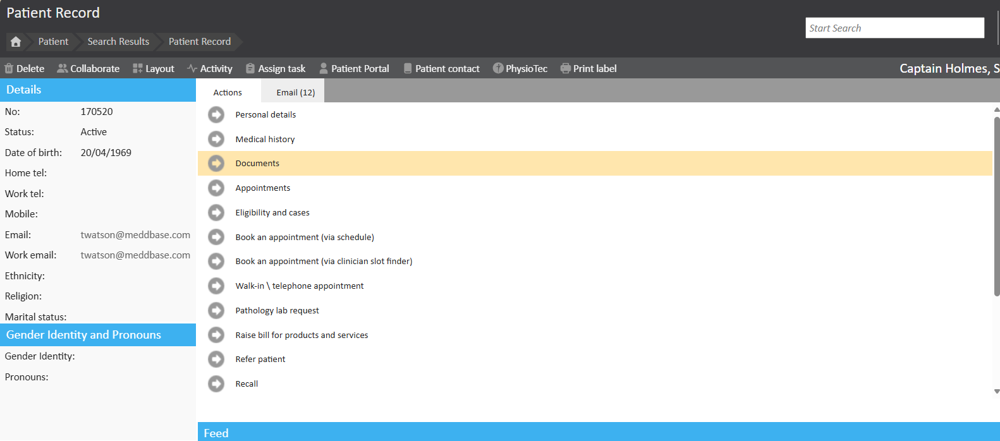
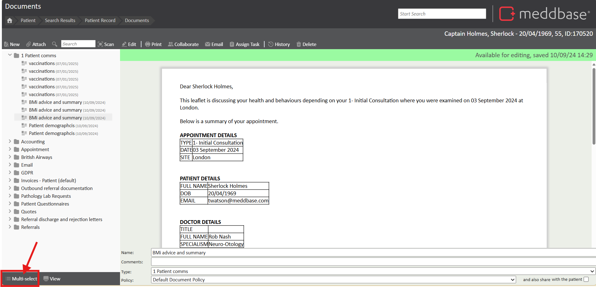
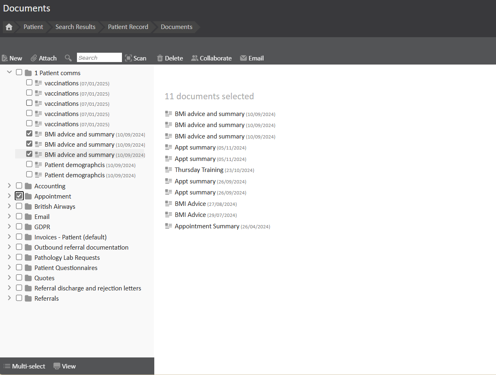

When sending documents securely via email in Meddbase, users often need to send multiple documents at once. The ability to select and send multiple documents helps improve efficiency and ensures all necessary files are included in the communication.
This article explains how to select and send multiple documents at once using the multi-select feature in the Patient Record section. It provides a step-by-step guide to facilitate the selection process and directs users to the article on sending secure emails with attachments for further instructions.
You firstly need to be within the relevant patient's document area. To do this, go to Patient > Search Relevant Patient > Patient Record > Documents. The document page is also accessible within a Consultation.

Once on the Documents page, located at the bottom of the document list there is an option of 'Multi-select'.

Click this to then start selecting multiple documents, or contents of folders you wish to email. Once this option has been selected check boxes will appear next to each document name. This allows for the relevant documents to be selected.
Once all relevant documents are selected, click Email and follow the normal process for sending emails with a secure attachment using the following article: Sending a Secure Email with Attachment
